Elektrotehnika R Tehnički fakultet u Rijeci
Kako smo gradivo elektrotehnike pretvorili u vježbu koja se rješava svaki dan, i što smo iz toga naučili.
01 Zašto modernizirati
Navikli su postaviti pitanje i odmah dobiti odgovor.
Dovoljno kvalitetno objašnjenje udaljeno je jedan upit.
Lakše je učiti, ali i izraditi alat koji pomaže u učenju.
01 Zašto modernizirati
02 Početna ideja
Studenti teškoprepoznaju serijskii paralelni spoj.
A bez toga nema ni ukupnog otpora, ni metoda, ni teorema mreža.
02 Isprobajte
02 Prva verzija · 7. 10. 2026.
03 Za koga je
Aplikaciju koriste i studenti Elektrotehnike na studiju mehatronike i robotike.
04 Rast aplikacije
Izmjene u repozitoriju po danu (commitovi)
04 Struktura
Kratki slajdovi s primjerima, korak po korak.
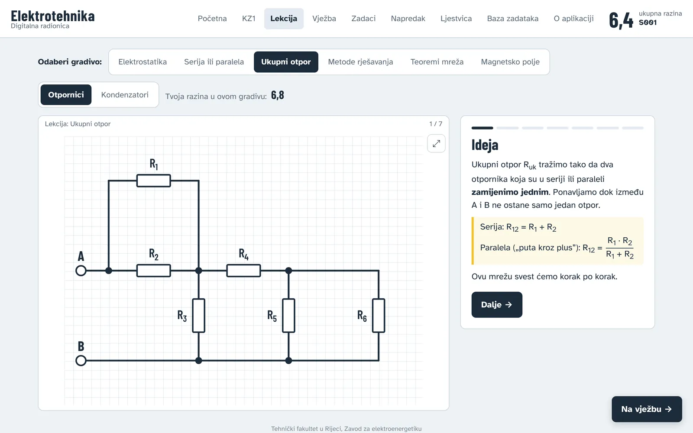
Pitanja prilagođena razini, s objašnjenjem nakon svakog odgovora.
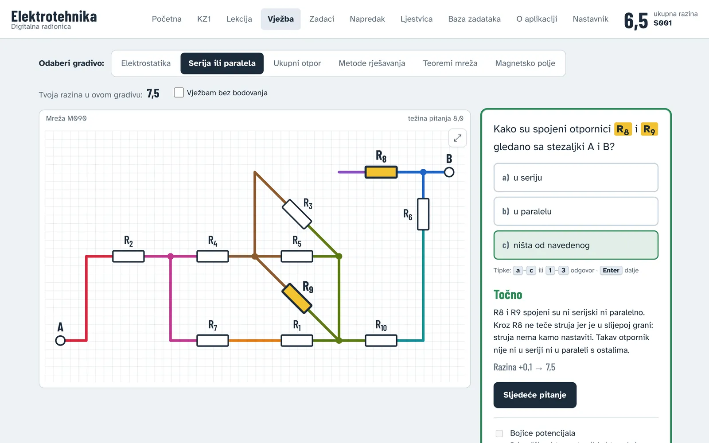
Zadaci s brojevima: na papiru, uz kalkulator, a rezultat se upiše.
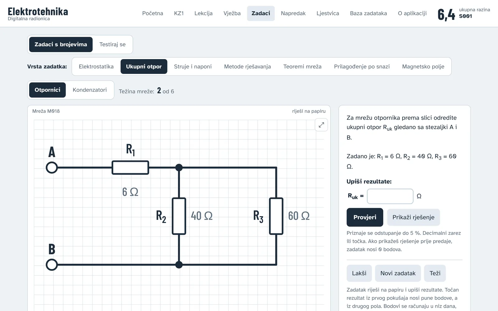
Stadiji pripreme i probna kontrolna zadaća.
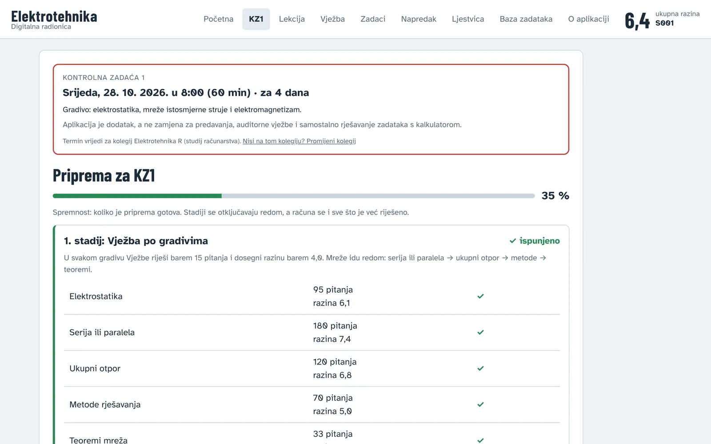
04 Vježba
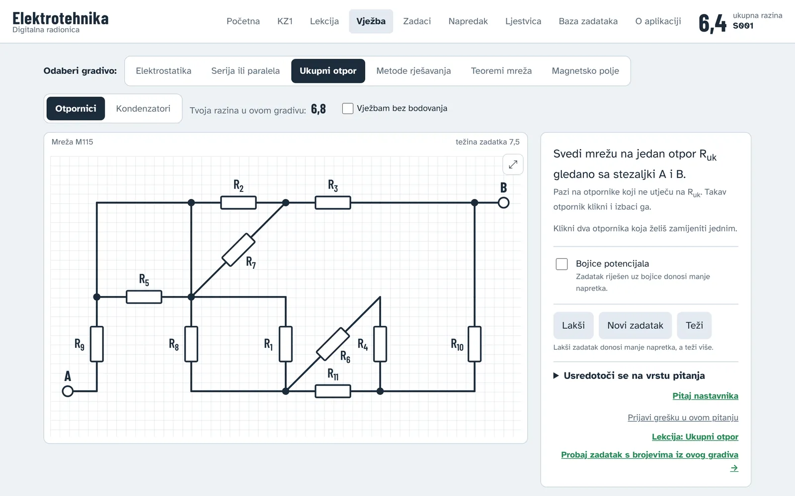
04 Gradiva do KZ1
Serija ili paralela
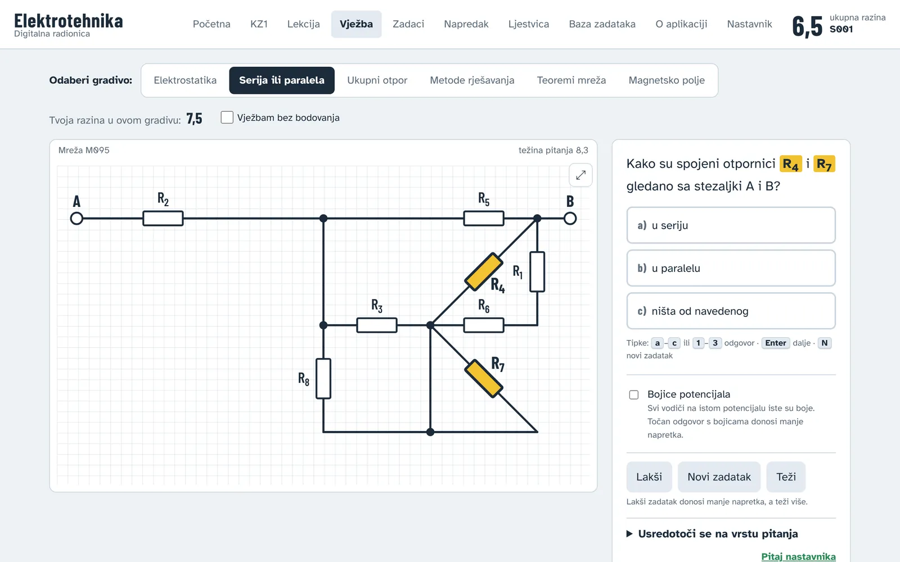
Elektrostatika
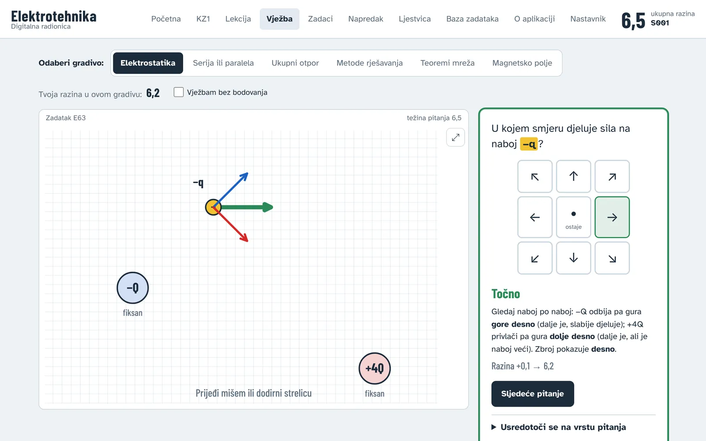
Konturne struje i naponi čvorova
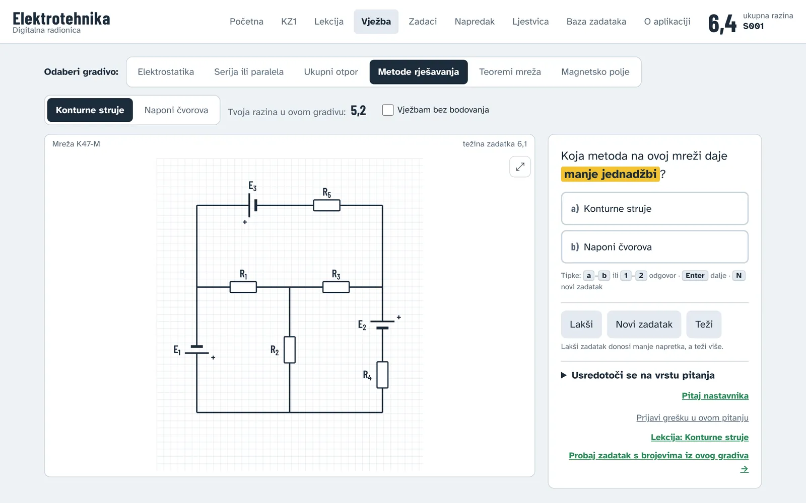
Ukupni otpor, teoremi mreža, magnetsko polje…
04 Gdje uče
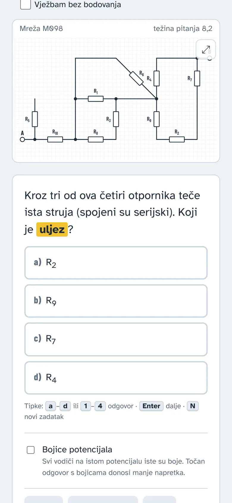
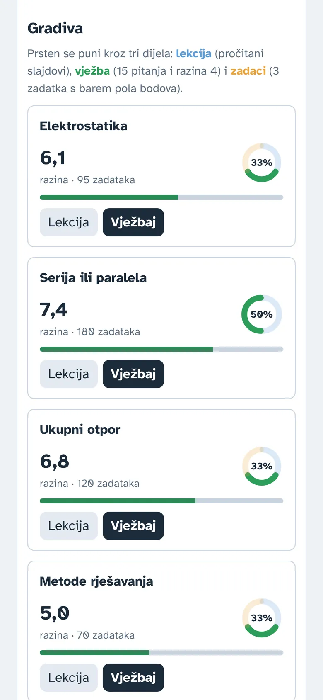
05 Priprema za KZ1
06 Gamifikacija
Iste mehanike kojima igre drže pažnju, ali u službi gradiva.
06 Gamifikacija
Kao rejting u šahu: raste s težim pitanjima.
Po gradivu, ukupno, tjedna, zadaci, probna KZ1, redovitost.
5 težih pitanja, ista za sve, s ljestvicom dana.
Tri mala cilja i bonus tjedni bodovi.
Za prve korake, svestranost, svladana gradiva.
Uz slobodne dane, da jedan propušten dan ne obeshrabri.
Tjedni bodovi, svaki tjedan iznova; najboljih 10 % dobiva značku.
Vježba i ponavljanje grešaka bez straha za razinu.
06 Razina
Svako pitanje ima svoju težinu. Točan odgovor na teže pitanje podiže razinu više; pogreška na lakšem više je spušta.
s – razina studenta, q – težina pitanja; 1/3 je pogađanje kod tri ponuđena odgovora.
06 Što smo naučili
Probali smo manju kaznu za pogrešku i dvostruke bodove za ispravljenu grešku. Prije objave simulirali smo 3 000 studenata poznatog znanja.
Razina mora mjeriti znanje. Motivacija ide kroz tjedne bodove, vježbu bez bodovanja i ponavljanje grešaka.
06 Ljestvice
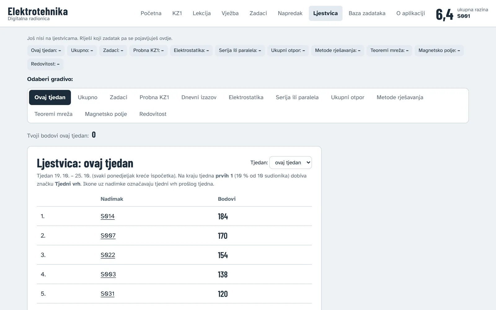
07 Analitika i ankete
Svaki odgovor ostavlja trag. Zajedno pokazuju gdje cijela grupa zapinje.
07 Analitika
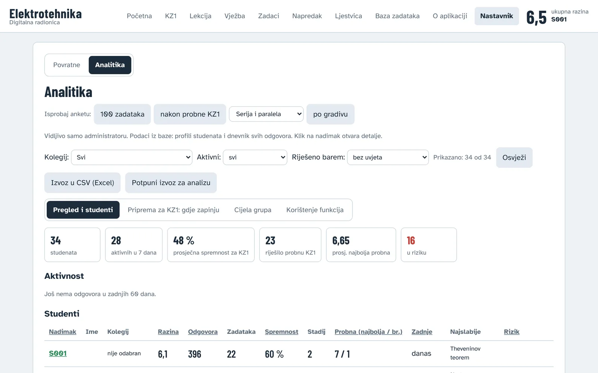
07 Povratne informacije
Pitaj nastavnika
Pitanje uz točno taj zadatak; odgovor se vidi u aplikaciji.
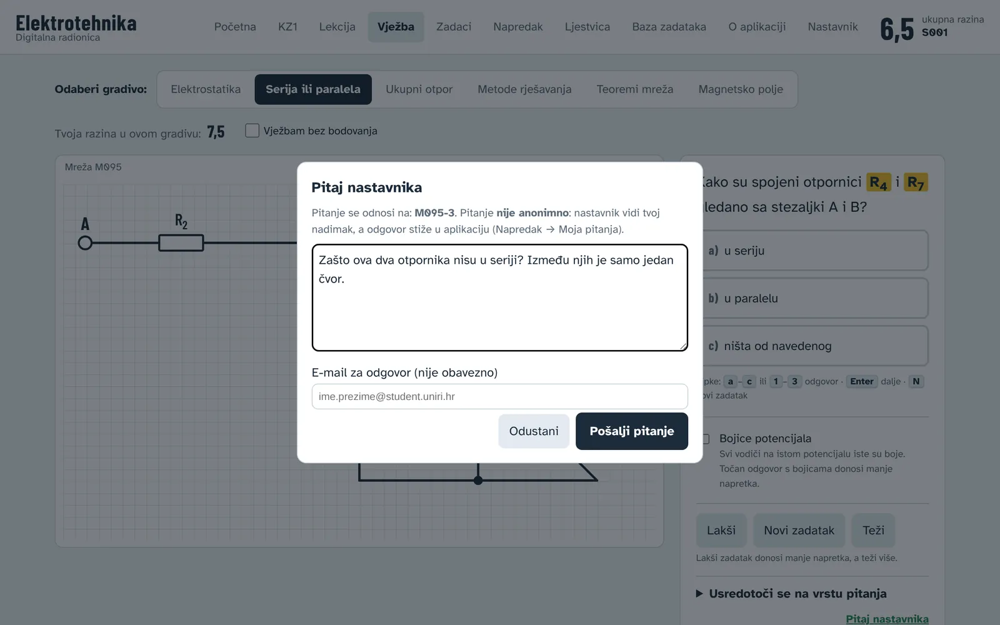
Kratke ankete
Nakon 100 riješenih pitanja, nakon probne KZ1 i po gradivu.
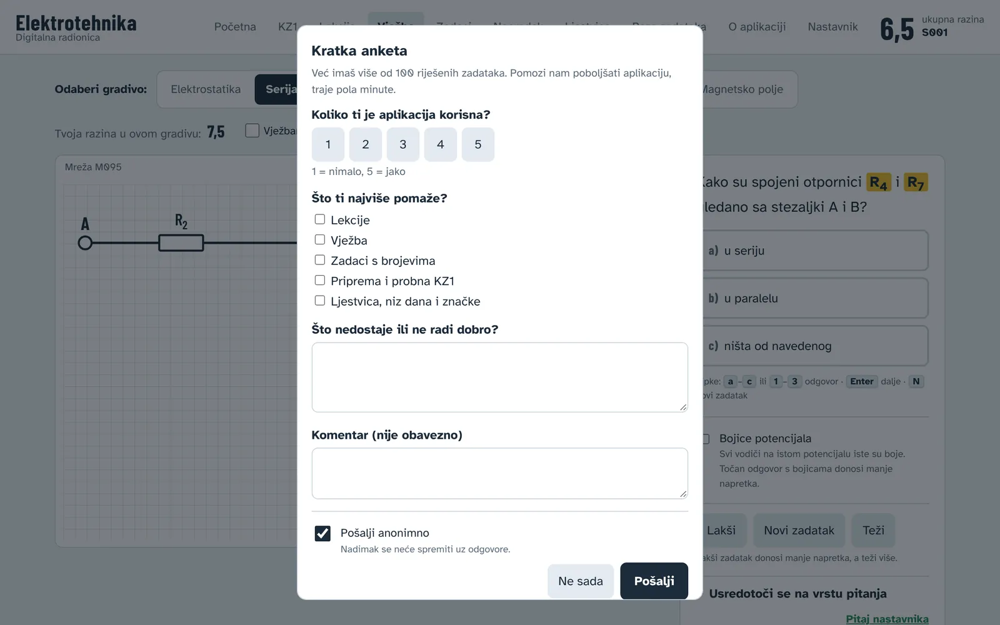
I pod pauzom
Prilaze s prijedlozima što dodati i s pitanjima o zadacima.
07 U brojkama
07 Kako je napravljeno
Na GitHub Pagesu, bez instalacije. Radi u svakom pregledniku, i na mobitelu.
Supabase čuva napredak i ljestvice. Tablice su zaključane; pristup samo preko provjerenih funkcija.
Nastavnik zadaje i provjerava, AI piše i testira. Upute za kolege su u repozitoriju.
08 Završetak
08 Završetak
Sadržaj se troši u kratkim komadima. Dugo predavanje i debela zbirka teže drže pažnju nego prije.
Aplikacije i mreže natječu se za pažnju mladih, i jako dobro znaju kako je osvojiti.
Iste alate možemo upotrijebiti za učenje:
08 Brojke
Živorođeni u Hrvatskoj
pristupnika državnoj maturi, 2015. → 2025. (−24 %)
NCVVO, godišnja izvješća o državnoj maturi
Izvori: DZS, Prirodno kretanje stanovništva (2024. privremeni podatak); NCVVO, rezultati državne mature 2025. (podatak o 9 127 pristupnika manje nego 2015.).
08 Završetak
AI alati su sve sposobniji. Studenti dolaze drukčije pripremljeni nego prije, i za to nisu sami krivi.
Na njima je budućnost.Na nama je da ih usmjerimo.
Hvala Pitanja?
alenjakoplic.github.io/elektrotehnika
Kod i upute za izradu slične aplikacije: github.com/alenjakoplic/elektrotehnika